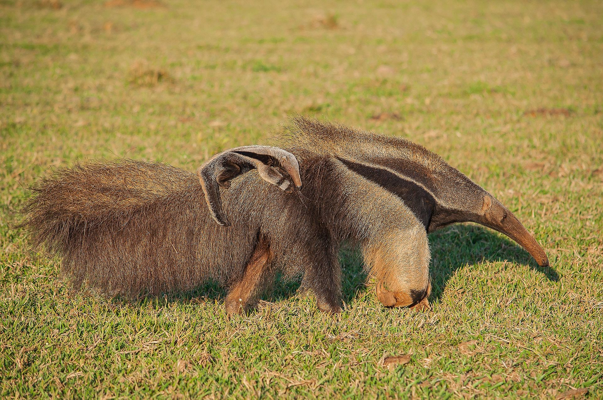

Род Карликовые муравьеды (Cyclopes), включающий 1 вид Карликовый муравьед (Cyclopes didactylus), относится к семейству Cyclopedidae, объединяемому с семейством Myrmecophagidae в один подотряд. Размеры варьируются от крохотного карликового муравьеда, который весит менее 400 г при длине тела 15 см, до гигантского муравьеда, чей вес превосходит 30 кг, а длина тела — 1,2 м. Самцы крупнее самок. У всех муравьедов длинные, трубкообразные морды с маленькой, узкой ротовой щелью. Уши небольшие, округлые; глаза маленькие. У тамандуа и карликового муравьеда хвост хватательный, на конце голый. Передние лапы пятипалые, вооружённые длинными и острыми крючковатыми когтями; особенно развит коготь на III пальце (до 10 см). Задние лапы 4- или 5-палые, с более короткими когтями. Очень длинный, червеобразный язык служит ловчим органом: он смачивается липкой слюной, выделяемой слюнными железами. У гигантского муравьеда его длина достигает 60 см; это больше, чем у любого другого сухопутного зверя. Тело покрыто густыми волосами; они короткие и мягкие (карликовый муравьед) или длинные и грубые (гигантский муравьед). Окраска довольно контрастная, от серой до золотисто-бурой на спине, желтоватая или серовато-белая на животе; для четырёхпалого муравьеда характерны черноватые полосы или обширное чёрное пятно на туловище. Череп удлинён и выглядит хрупким, но на самом деле его кости толстые и прочные. В отличие от броненосцев и ленивцев, зубы полностью отсутствуют. Скуловая дуга незамкнутая. Смыкающиеся крыловидные кости значительно увеличивают протяженность твёрдого нёба (гигантский муравьед и четырёхпалый муравьед). Нижняя челюсть тонкая, длинная и слабая. Распространены муравьеды от Мексики через Центральную Америку до Боливии, Бразилии и Парагвая. Населяют главным образом тропические леса, но встречаются и в открытых районах типа саванн, по берегам рек. Ведут наземный (гигантский муравьед), древесный (карликовый муравьед) или наземно-древесный (четырёхпалый муравьед) образ жизни. Активны преимущественно в сумерки и ночью. Питаются почти исключительно муравьями и термитами, чьи постройки разрывают мощными передними лапами, после чего собирают насекомых своим клейким языком. Реже поедают пчёл и личинок жуков; в неволе большой муравьед ест также фрукты. Зубов у муравьедов, как уже говорилось выше, нет, однако пилорический отдел желудка снабжён мощной мускулатурой (как у птиц), помогающей перетирать пищу. Также муравьеды иногда глотают песок и мелкие камешки, усиливающие этот процесс. У муравьедов прекрасное обоняние, но слабые слух и зрение. Мощные когти хорошо защищают их от хищников. Образ жизни они ведут одиночный; исключение составляют самки с детёнышами. Размножаются раз в год. Самки рождают 1 детёныша, которого носят на спине. Представители этого семейства в виде ископаемых останков известны в Южной Америке с раннего миоцена, однако семейство муравьедов, вероятно, древнее. Сейчас эти животные стали довольно немногочисленны, тем не менее, они не охраняются законом.
